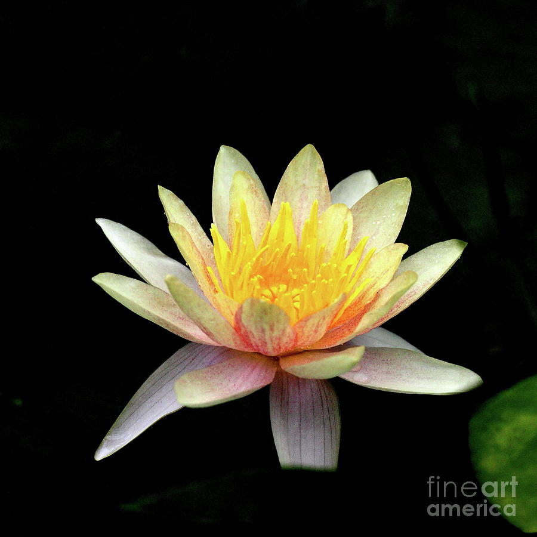
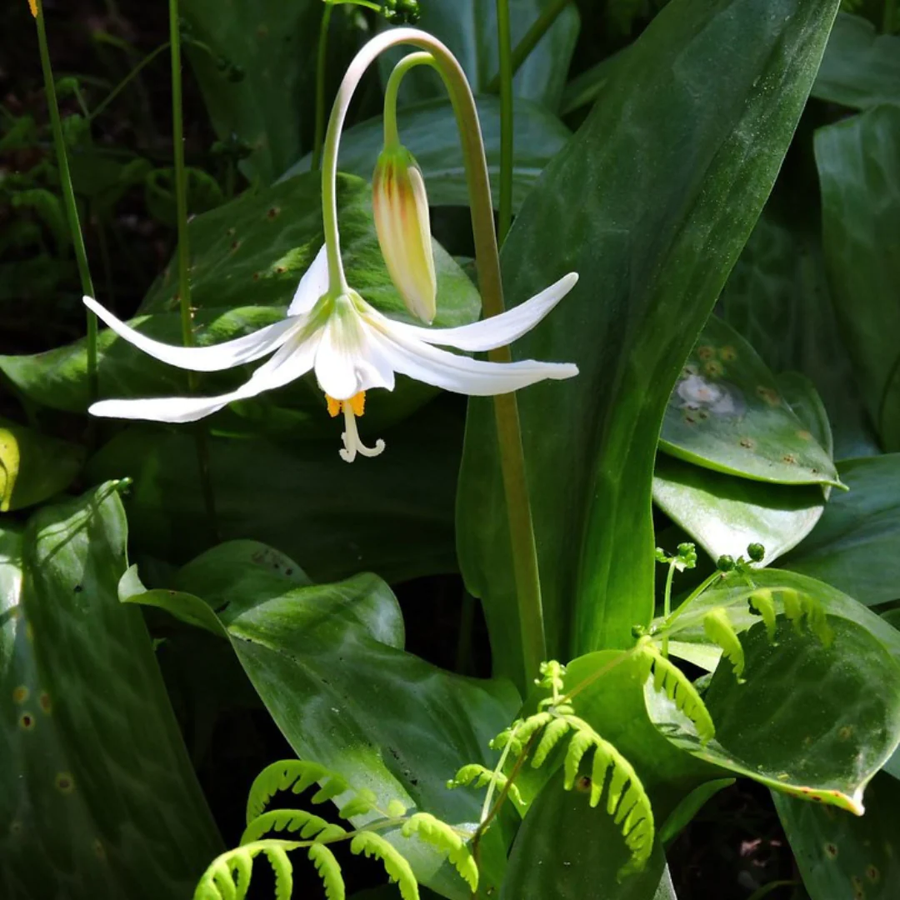
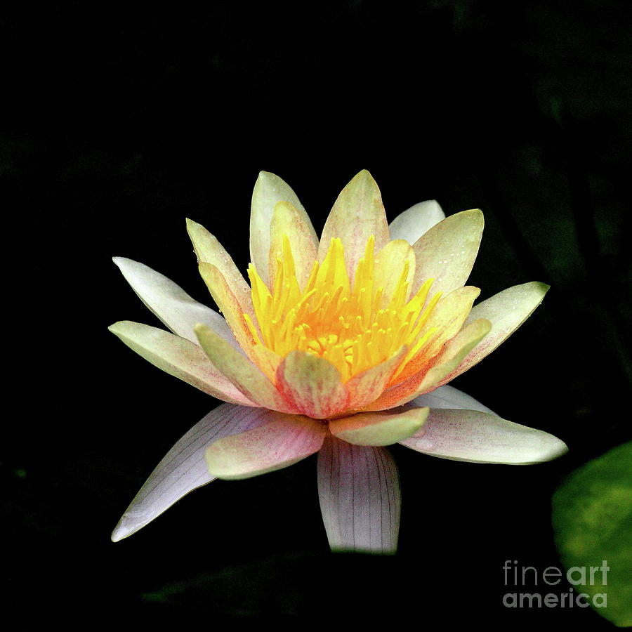
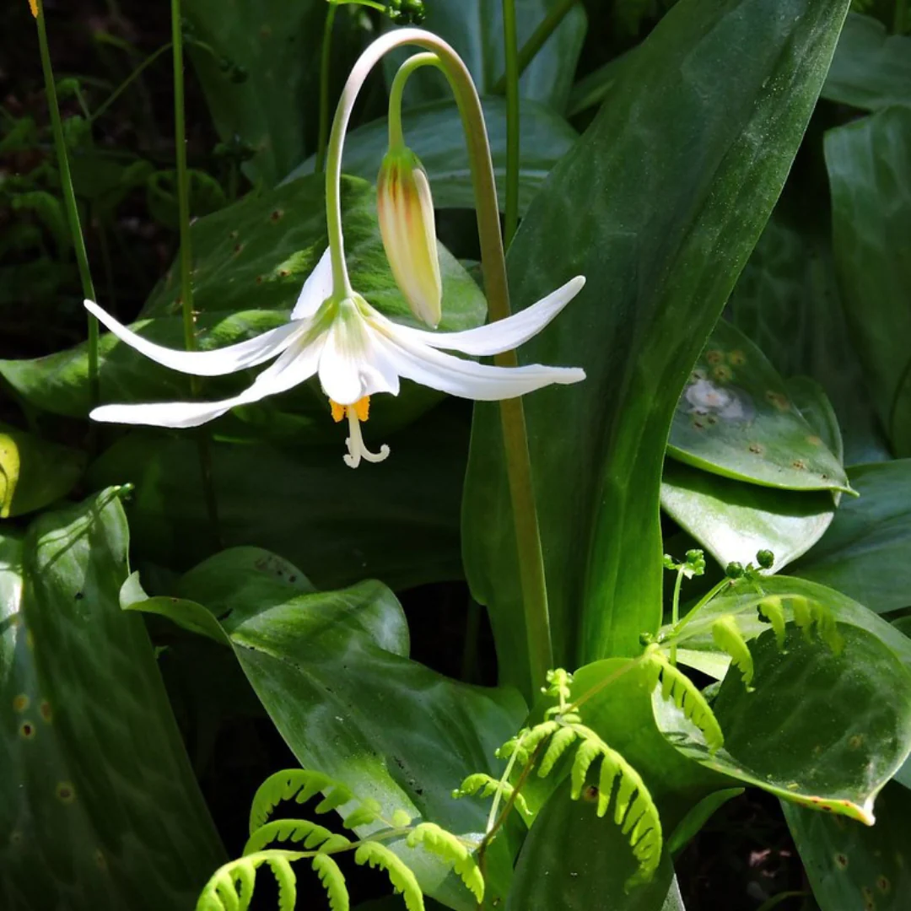
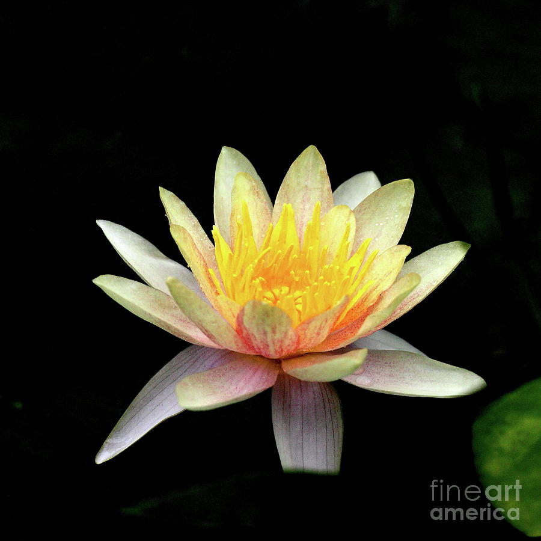
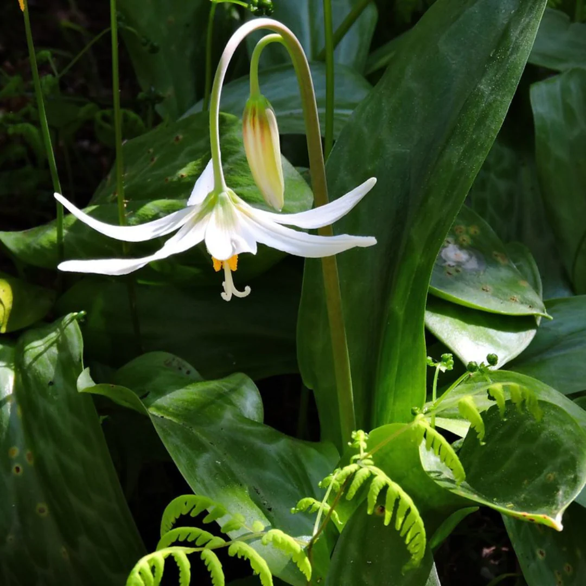

Plants row breaks first
The width of letters is 576px and width is plants is 768px. while reducing the size, if the size of screen reduced below 768px then the plants row breaks and after the screen width is below 576px letter row breaks


| Letter | Plant | Mountain | Lake |
|---|---|---|---|
| T | Taxus | Tatakooti peak | Tahoe |
| H | Halesia | Haramosh peak | Hancza |
| E | Emilia | Eagle peak | Ezequiel Ramos Mexia |
| L | Lotus | Lalla khedidja | Laguna de Bay |
| L | Lily | Lassen peak | Lubans |
| A | Abelia | Acamarachi | Akan |
Taxus baccata is a species of evergreen tree in the family Taxaceae, native to western, central and southern Europe (including Britain and Ireland), northwest Africa, northern Iran, and southwest Asia
Lotus plants are adapted to grow in the flood plains of slow-moving rivers and delta areas. Stands of lotus drop hundreds of thousands of seeds every year to the bottom of the pond. While some sprout immediately, and most are eaten by wildlife, the remaining seeds can remain dormant for an extensive period of time as the pond silts in and dries out. During flood conditions, sediments containing these seeds are broken open, and the dormant seeds rehydrate and begin a new lotus colony.
Lilies are tall perennials ranging in height from 2–6 ft (60–180 cm). They form naked or tunicless scaly underground bulbs which are their organs of perennation. In some North American species the base of the bulb develops into rhizomes, on which numerous small bulbs are found. Some species develop stolons.